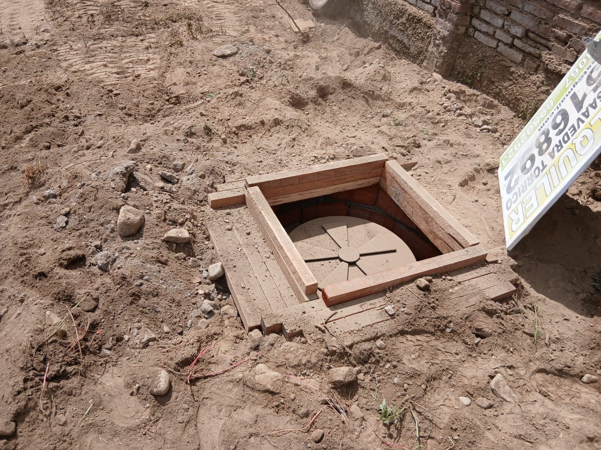
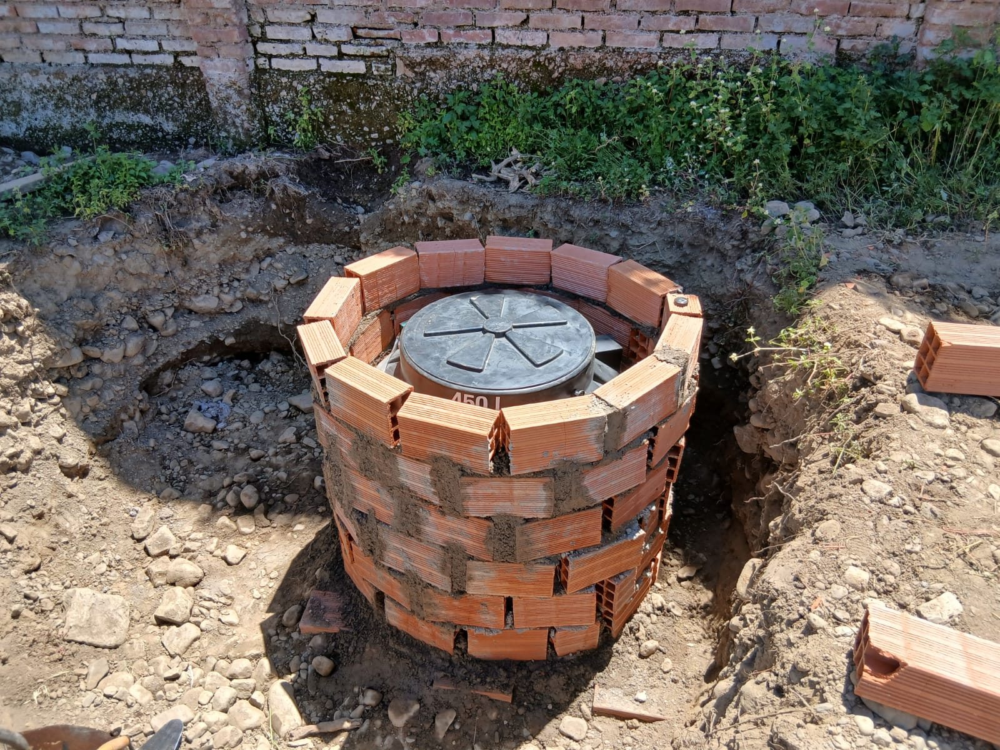
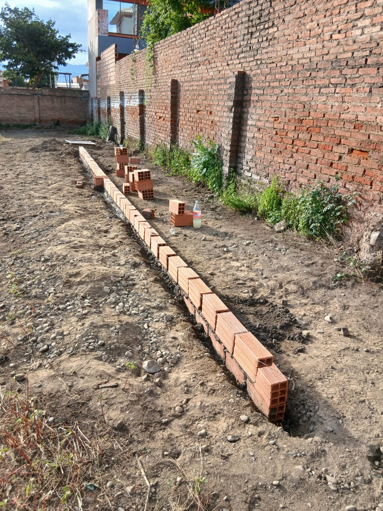
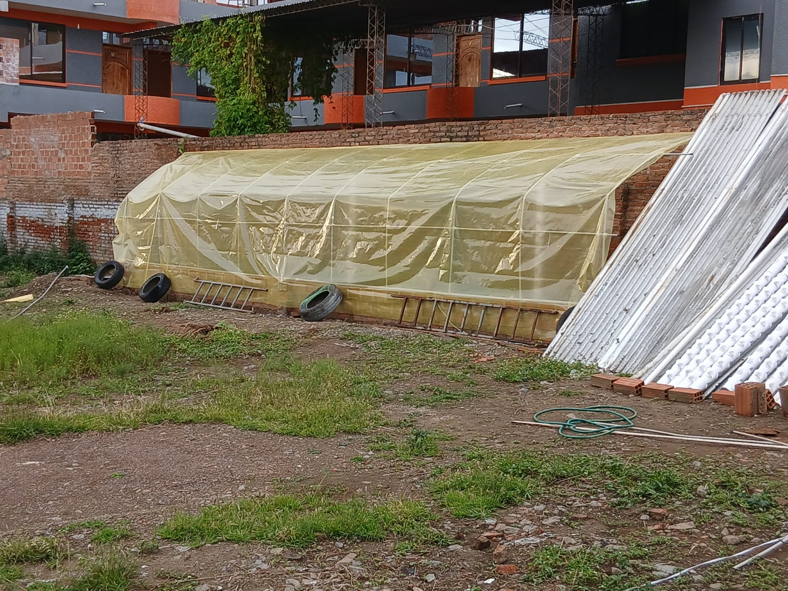
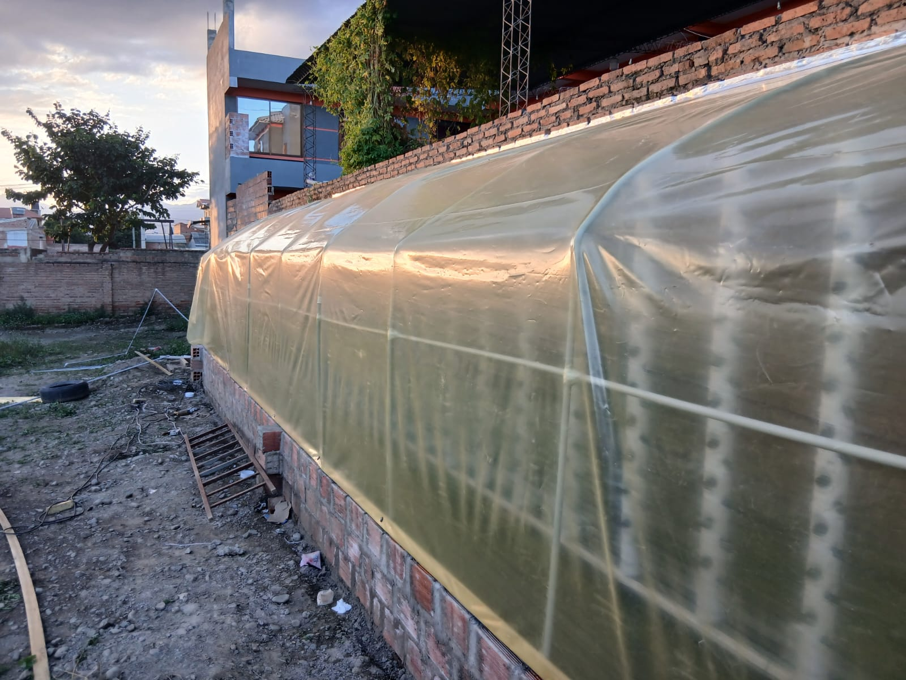
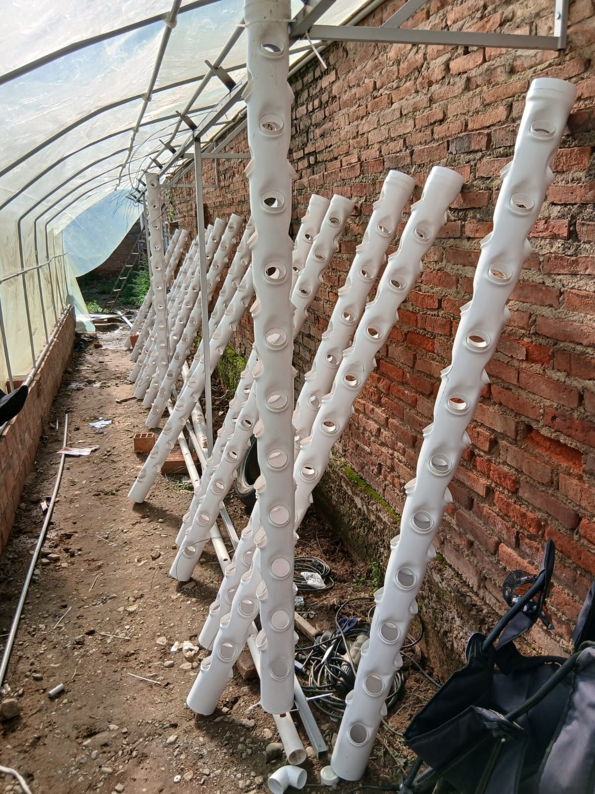
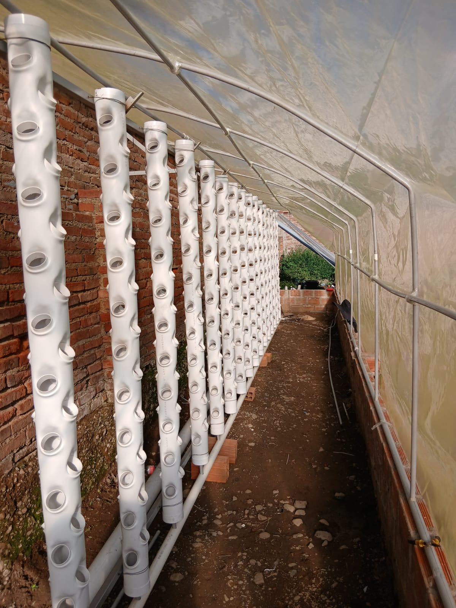
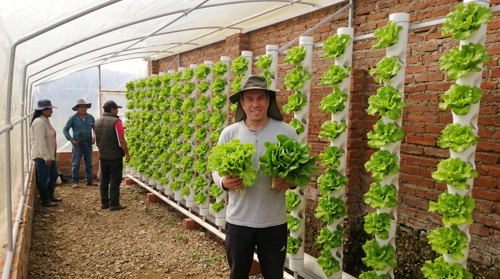

En Buggycross no solo ofrecemos adrenalina, también cultivamos el futuro.
Contamos con un moderno invernadero hidropónico donde producimos hortalizas de alta calidad, principalmente lechuga, de forma limpia, segura y sostenible.
Al cultivar sin tierra, nuestras plantas crecen en un ambiente controlado, libre de contaminantes del suelo, con mayor protección contra plagas y enfermedades. Esto nos permite ofrecer productos más sanos, frescos y nutritivos.








Visita nuestro invernadero y conoce de cerca esta tecnología que combina innovación, sostenibilidad y salud.